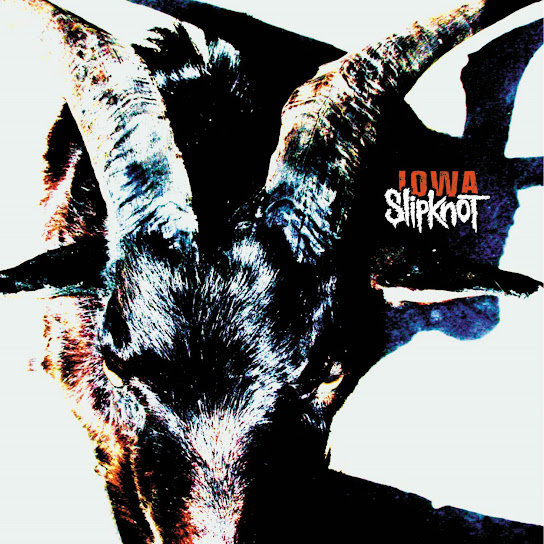

Discografía
Estos son algunos de los álbumes más representativos de esta banda, con enlace directo a YouTube para escuchar el disco completo.
Álbumes Destacados

IOWA (2001)
"IOWA es una combinacion perfecta entre el metal comercial y el metal mas pesado que se puede encontrar en el mercado, siendo un album excelente para los amantes del genero”.
Escuchar en YouTube
Slipknot (1999)
El primer album de la banda, un clasico que impulso a esta banda al estrellato con canciones como "Wait and Bleed" y "Eyeless".
Escuchar en YouTube
All Hope Is Gone (2008)
El album mas exitoso de Slipknot que tiene la cancion mas conocida de toda la banda "Psycosocial" el cual sigue sonando hasta el dia de hoy .
Escuchar en YouTube